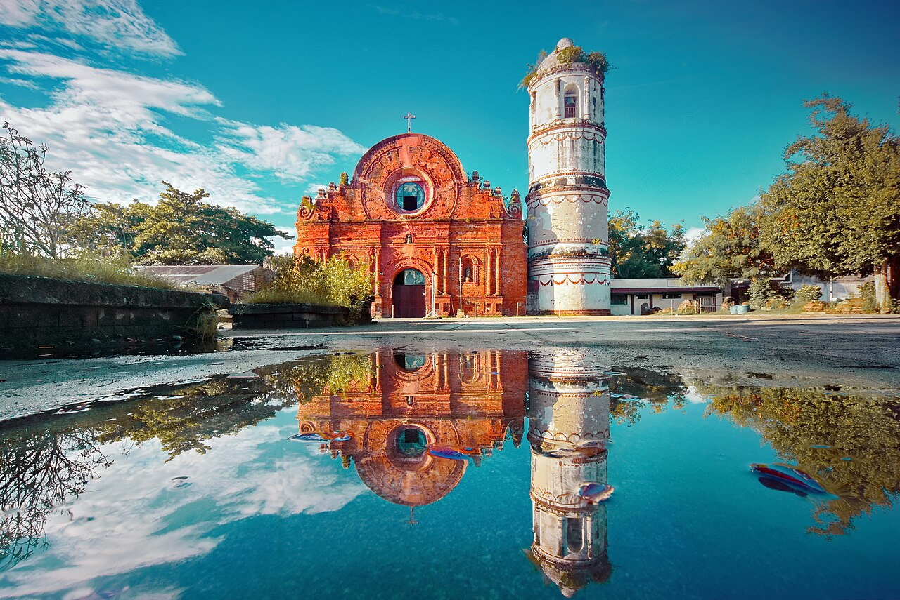
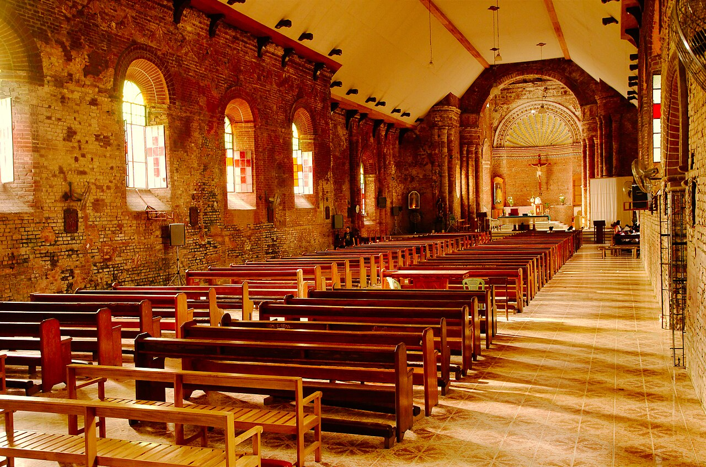
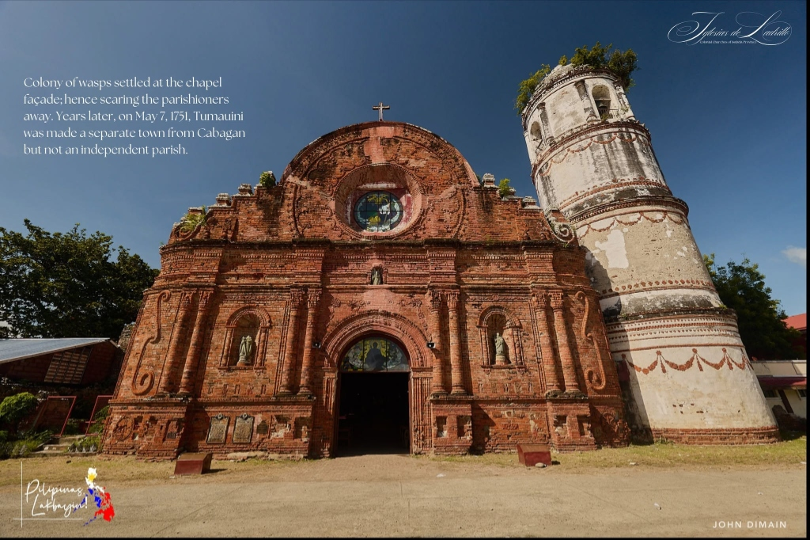

Tumauini Heritage & Tourism.
Centuries of baroque terracotta craftsmanship, sacred history, and vibrant valley ecotourism across Tumauini.
San Matias Parish Church.
Declared a National Cultural Treasure on February 24, 1989 by the National Museum of the Philippines.

Mastery of Carved Red Brick Masonry.
Built under the direction of Dominican friar Domingo Forto beginning in 1783, Tumauini Church is acclaimed across Southeast Asia for its exuberant red-brick ornamentation. Each clay block was carved, numbered, and kiln-fired individually along the Pinacanauan River.
Attractions & Heritage Sites.
Select any destination card to inspect visiting hours, history, and travel guidelines.

National LandmarkSan Matias Parish Church (1783)
Historic 1783 Dominican ultra-baroque terracotta brick parish church.
Cylindrical Brick Bell Tower
The Philippines' only four-tier cylindrical red-brick campanile.

Artisan MasonryCarved Brick Rosettes & Motifs
Individually sculpted clay floral motifs and baroque reliefs.
 River Ecotourism
River Ecotourism
Pinacanauan de Tumauini River
Pristine freshwater river for kayaking, rafting, and swimming.
Nature Adventure
Camp Samal Nature & Eco-Trails
Panoramic Sierra Madre forest trails and tranquil campsites.
Rolling Yellow Corn Plains
Endless golden corn fields across Isabela's premier capital.
Pav-vurulun Festival Grounds
Vibrant annual street dancing and patronal fiesta arena.
Pancit Tumauini Food Trail
Signature handcrafted miki noodles topped with crispy lechon.
No matching destinations found
Try adjusting your search query or reset your category filters.
Festivals & Cultural Events.
Annual cultural celebrations honoring Saint Matthias and the agricultural bounty of Isabela.
Pav-vurulun Festival
The grand patronal town fiesta celebrated with street dancing, agricultural exhibits, traditional sports, and the coronation of the Festival Queen.
Feast of Saint Matthias
Solemn liturgical feast and heritage day marking the declaration of San Matias Parish Church as a National Cultural Treasure.
Annual Corn Harvest Fair
Celebrating the bountiful harvest of Tumauini as Isabela's premier corn capital, with agri-trade bazaars and culinary competitions.
Authentic Culinary Heritage.
Traditional panciterias, fresh carabao dairy confections, and local harvest specialties.
Pancit Tumauini
Handmade egg miki noodles bathed in rich meat broth, heaped with crunchy lechon carajay, boiled egg wedges, and native calamansi-chili dip.
Carabao Milk Pastillas
Fresh farm-sourced carabao milk gently simmered into silky, melt-in-your-mouth milk candies, wrapped in traditional colorful papel de hapon.
Roasted Corn Coffee
Caffeine-free traditional brew made from slow-roasted native yellow corn kernels, celebrated for its aromatic earthy warmth.
Plan Your Visit to Tumauini.
Essential access routes, conservation etiquette, and tourism desk support.
How to Get to Tumauini
- By Air: Fly to Cauayan City Airport (45 mins south) or Tuguegarao City Airport (1 hour north), followed by public bus or van along Maharlika Highway.
- By Land: Direct air-conditioned passenger buses (Victory Liner, Florida, Partas, Genesis) depart daily from Metro Manila (Cubao/Kamias/Sampaloc) bound for Tuguegarao/Aparri, stopping directly in front of Tumauini Municipal Hall.
- Local Transit: Registered MTFRB tricycles provide convenient point-to-point transit from the town center to heritage sites and riverbanks.
Heritage Conservation Code
- Preserve the Red Brickwork: Do not touch, lean on, scratch, or lean bikes against the 240-year-old terracotta bricks or rosettes.
- Sacred Reverence: San Matias is an active house of worship. Maintain silence, dress respectfully (covered shoulders/knees), and avoid flash photography during religious services.
- Clean As You Go (CLAYGO): Tumauini strictly enforces municipal anti-littering and plastic waste ordinances at all eco-parks.
- Tourist Information Desk: Register at the Municipal Tourism Office, Ground Floor, Municipal Hall for accredited local tour guides.